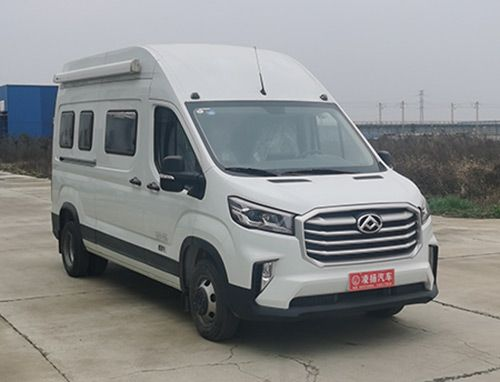

The LA Auto Show's outdoor area reads like a catalog of the pickup camper lifestyle — slide-in truck campers turning half-ton pickups into rolling cabins, adventure vans with beds and kitchens bolted in. Similar scenes played out at China's own Shanghai RV & Camping Show earlier this month, where compact camper vans and new-energy motorhomes drew the heaviest traffic from overseas buyers. Two continents, one message: buyers want campers that fit a normal parking space, drive like a daily vehicle, and still sleep a family.
That is exactly the segment we build in. Below are our registered camper models, straight from China's MIIT announcement records — so you know the specs are real, not brochure talk.
The urban-sized pickup camper class: under 3 tonnes
Our LYP5030TSY camper van is the smallest registered unit in the lineup: GVW 2,935 kg with a curb weight of 2,610 kg, overall length just 5,450–5,710 mm on a 3,270 or 3,470 mm wheelbase, body width 1,950 mm and height 2,110 mm. It fits ordinary parking spots and city garages — the core appeal the LA Auto Show crowd is voting for. Power comes from a JMC JX4D23A6L diesel (130 kW), with 245/70R17-class tires registered for light off-pavement use.

The mid-size family class: 3.8–4.25 tonnes
Two steps up sit the LYP5041TSY (GVW 3,800 kg, curb 3,670 kg, 5,495 mm long on a 3,360 mm wheelbase, JMC JX4D20A6H 107 kW diesel, 160 km/h registered top speed) and the LYP5040TSY (GVW 4,250 kg, curb 3,750 kg, 5,998 × 2,098 mm footprint, height options 2,498–2,620 mm). These are the "sleep four, park anywhere" layouts rental fleets keep ordering — and rental demand is precisely what's driving camper volumes globally right now.
The light-truck camper class: full wet bath, real payload
For buyers who want a slide-out, a wet bath or a bigger garage, the LYP5046XLJ moves onto a light truck chassis: GVW 4,495 kg, curb 4,080 kg, 5,990 mm long, 3,760 mm wheelbase, with Shanghai New Power SC20-series diesels from 110 to 130 kW. A related platform, the LYP5045XLJ1 (GVW 4,250 kg, curb 3,550 kg), lists JMC Duratorq engines up to 128 kW and multiple body heights up to 2,775 mm. Crew-cab conversions and layout options are configured per order — contact us for details on payload allocation and interior packages, since those depend on the furniture specification you choose.

Why importers are watching this segment now
Three currents converged this month: LA Auto Show visitors crowding the pickup camper displays, Shanghai RV show data showing compact camper registrations up sharply, and China's new ten-ministry policy package pushing camper infrastructure and consumption. For a distributor, a compact camper van costs less to ship than a C-type motorhome, clears easier under light-truck categories in many markets, and rents out year-round in cities — not just on expedition routes.
Three questions to bring to your factory talk
First, ask which announcement model the camper is actually built on — the MIIT registration decides what your customs broker can clear. Second, ask for the curb weight of your interior specification, because payload margins change with every option fitted. Third, ask whether the chassis has local-market engine homologation or needs adaptation. We answer all three in writing with every quote.
See all motorhome & camper models WhatsApp us for the camper price list
Specs come from China's MIIT announcement records for LINGYANG (凌扬牌) models. Final configuration and payload are confirmed per order. — HESIN, overseas division of LINGYANG Vehicle Manufacturing.